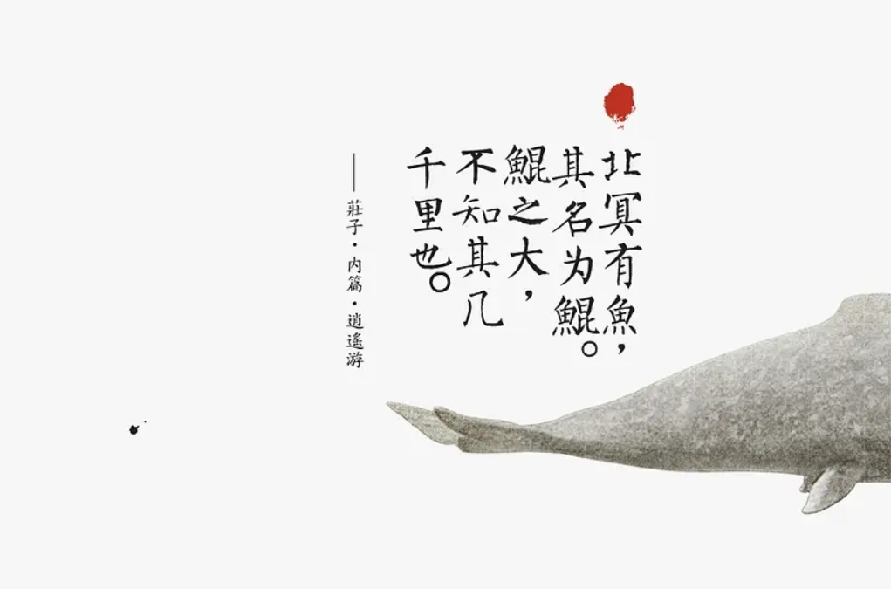
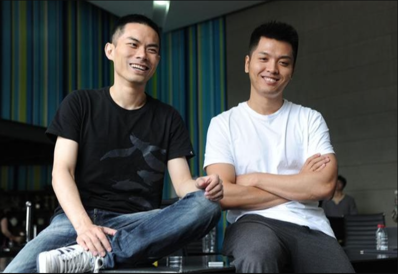
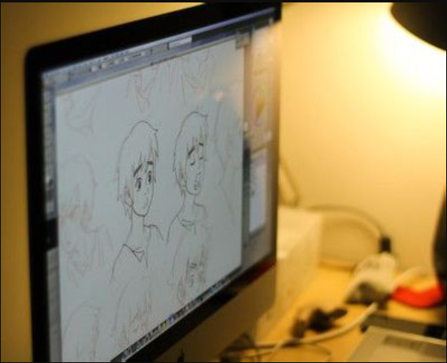
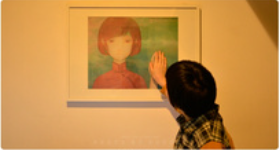

灵感来源
影片的世界观源自梁旋的一个梦，创意源自《庄子·逍遥游》中的“北冥有鱼，其名为鲲，鲲之大，不知其几千里也”，在此基础上构建了属于自己的世界观；其故事雏形来源于导演的先后两个梦，电影还融合了许多来自古书《山海经》、《搜神记》与上古神话“女娲补天”等的传统元素，并基于这些元素打造了一个奇幻世界；影片发生的场景源自中国客家围楼（又称土楼）。
制作过程
2004年，从清华退学的梁旋做了一个跟鱼有关的梦，他和张春用一个月的时间，将其做成一个flash短片，这也是《大鱼海棠》的故事源头。2005年3月，二人成立彼岸天公司，专职做动画。2007年，梁旋做了第二个跟鱼有关的梦，他试图将这两个梦连在一起，制作出一部动画电影。2007年底，他们凭借短片《燕尾蝶》拿到了第一笔做样片的资金，之后投入长片《大鱼海棠》的创作，梁旋与张春带着主创人员对福建的土楼进行了多次采风，构思修改剧本用了两三年时间，并制作完成了近20分钟的电影片段；2008年，项目正式启动，两位导演开始打磨剧本，首支样片制作完成，同时开始跟资方接触。2010年，该项目因后续资金未到位而暂停，直到2013年影片发起众筹，这一举动引起光线传媒总裁王长田注意并在同年11月正式投资电影及彼岸天团队，使得影片制作重新走上了正轨
|  |  |  |
幕后花絮
- 影片由于多次被网友误传不实上映信息但未上映，被戏称为“神坑”。
- 《大鱼海棠》背后的故事，梁旋他们写了几万字的小传进行叙述。
- 电影在2013年以45天里获得超过158万元资金支持创下中国众筹融资的记录。
- 梁炫他们在创作过程中没有把这个故事当做三角恋来解读，只是追求和守护的东西。
- 全片由手绘2D稿制成，共计十几万多张图稿，需要原画团队去把人物的情绪精准的表达出来。
- 创意最早来源于导演梁旋在十二年前的一个梦，取材于《山海经》等中国诸多古籍来构建的这个神秘世界。
- 制作过程中，团队从几十人的规模一度只剩下6个人，两位导演不得不暂停项目，靠接其他的工作，先养活公司。
- 《大鱼海棠》的原声配乐为吉田洁，2004年这个故事被做成flash短片时所采用的配乐正是吉田洁的《遥远的旅途》。
- 影片曾被时光网误传在2012年12月29日上映，《大鱼海棠》在网站上的期待分数高达9.5分，为当年所有即将上映电影最高分。
- 章子怡、佟大为、李少红、李玉等演员导演曾公开推荐该片，章子怡曾表示愿意为该片角色配音。
- 《大鱼海棠》珍藏版明信片在2012年3月由官方预先发布，2千套明信片在3天内预售被抢空。
- 某杂志采访B&T在《大鱼海棠》诞生前的历史，导演Tidus凭借一封长信打动投资人投资百万美金启动电影。
- 《大鱼海棠》有很多灵感来自于古中国。
- 影片中《逍遥游》、《诗经》、《山海经》等等中国古籍中的形象与故事的结合，以及福建传统土楼、麻将、唐装、陶笛等中国独有的文化产物在情节中的承接。
- 电影原本还有另外一个彩蛋，后来因为片长的原因删掉了，那个彩蛋就是有一天椿会变成一条鱼再跟湫重聚，因为他已经是灵婆的接班人，他也许在那里会待8000年。